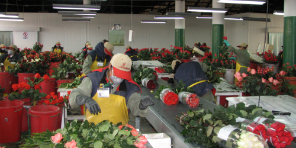

Мы очень надеемся, что сервис нашего портала позволит покупателям почаще отдыхать в подобных местах где-нибудь на океане. Желаем Вам появиться на этом снимке как можно скорее :)
Наш сайт располагает обширной базой данных производителей и сортов, поэтому сам по себе каталог цветов уникален. В настоящий момент наиболее полно в каталоге представлены сорта:
которые выращиваются в Эквадоре, Колумбии, Кении
Покупатели могут сформировать свои заказы прямо на нашем сайте. Продвинутый интерфейс позволяет при формировании заказов пользоваться сортовыми составами плантаций, использовать гибкую систему предпочтений, определять возможные замены. История заказов хранится в базе данных. Заказчик может импортировать свой заказ из предыдущей даты, немного преобразовать его и актуализировать (поставить к исполнению) в ближайшее время.
Любой заказчик в любой момент может просмотреть текущее состояние своего заказа, увидеть, на какие плантации заказ распределён, какие позиции уже плантациями подтверждены, а какие до сих пор находятся под вопросом. Заказчик принимает активное участие в распределении своего заказа между плантациями, он может вмешаться в процесс закупки, сделать необходимые коррекции.
Специальный интерфейс позволит покупателю в диалоговом режиме формировать стандартные и контрактные заказы с множеством плантаций, которые также являются пользователями портала.
Любому заказчику система автоматически отправляет пре-алерты — документы, из которых он может получить необходимую информацию о датах прибытия грузов и номерах авианакладных. Помимо этого заказчик в любой момент может выкачать свежую информацию непосредственно с сайта.
Формируя свои предпочтения по плантациям, и заказывая сорта от конкретных плантаций, покупатель тем самым как бы голосует, принимает участие в формировании рейтинга плантаций и сортов, производимых той или иной плантацией. Очевидно, что некоторые плантации могут находиться на «пике формы», и поэтому их качество в данный момент отменное. Естественно, что покупатели, размещающие заказы через наш web интерфейс, получат доступ к текущему рейтингу качества, что может служить хорошей подсказкой в процессе формирования заказа.
Как могут пользоваться порталом производители цветочной продукции, например, плантации, которые выращивают свежесрезанные цветы? Если производитель цветов активно работает с базой данных сайта, то он может:
Разместить список сортов, производимых плантацией, и постоянно поддерживать его в актуальном состоянии.
Анонсировать новые сорта, которые уже посажены, и в ближайшее время появятся в поточной продукции; а также производить интерактивный опрос потенциальных покупателей портала перед тем, как сделать ставку на новые сорта для производства в ближайшем будущем.
Предоставлять потенциальным клиентам уникальные фотографии сортов именно со своей плантации. Как известно, один и тот же сорт может иметь более или менее насыщенную цветовую гамму в зависимости от местности, где он выращивается.
В любой момент производитель сможет проверить on-line, какие позиции заказов покупатели ожидают от него прямо сегодня, и какие позиции производитель сможет упаковать и отправить в ближайшие несколько дней, для того чтобы полностью укомплектовать заказы.
Специальный интерфейс позволит плантации в диалоговом режиме формировать стандартные и контрактные заказы с множеством клиентов, которые также являются пользователями портала.
Ежедневно выкладывать свои свежие предложения и эффективно продавать их на свободном рынке многочисленным покупателям портала.
Производитель цветов, пользующийся сервисом нашего портала, автоматически рекламирует свой brand среди покупателей портала.
Сотрудники координационно-транспортного отдела производителя смогут в любое время увидеть действующую инструкцию по оформлению всех необходимых документов (инвойсов, фитосанитарных сертификатов, сертификатов происхождения), инструкцию по маркировкам коробок. Помимо этого производитель сможет получить точные номера авианакладных (AWB) под которыми фактически были отправлены коробки.
Транспортные агенты, которые координируют отправку грузов, получают доступ к оперативной информации, которая позволит им:
- оценить индикационный объём цветочных грузов и забронировать соответствующие места на авиалиниях заблаговременно.
- определить, какое количество мест, и от каких производителей ожидается к доставке на склад транспортного агента сегодня.
- Наблюдать on-line информацию о приоритетах загрузки на рейсы согласно маркировкам каждого получателя.
Приём цветочных грузов в амстердамском аэропорту Schiphol
Процедура принудительного охлаждения — вакуумный пре-кулинг (pre-cooling)
Оформление транзитных документов Т1.
Загрузка цветочных грузов в грузовики группажно-транспортных компаний либо на авиарейсы, доставляющие коробки к заказчикам.
Пользуясь нашим сайтом, сотрудники handling агента смогут получить непосредственно с сайта (или проверить) данные распределения коробок между траками группажно-транспортных фирм.
Постоянно общаясь с handling — агентом, с транспортными агентами в месте отправки грузов а также, получая данные с сайтов авиакомпаний, мы всегда сможем ответить покупателям, где находится их груз в настоящий момент, когда он ожидается к прибытию в точку, и когда он станет доступным для дальнейшей загрузки после pre-cooling.
Группажно — транспортные фирмы осуществляют доставку грузов, прибывших в точку, окончательным получателям — покупателям портала. Как правило, очистка грузов также входит в комплекс их услуг. Выбор группажно — транспортной фирмы — это выбор покупателя. Обычно покупатели сами производят предварительное бронирование грузов, контактируя с координационным офисом группажно — транспортной фирмы.
- по мере поступления грузов в точку, группажно-транспортные фирмы получают из нашей системы пре-алерты с указанием количества мест для каждой маркировки покупателя, номеров авианакладных, стеблевого состава грузов.
- Менеджеры группажно-транспортных фирм, ответственные за выдачу коробок в конечном пункте, могут получить on-line информацию, которая поможет корректно раздать коробки получателям согласно номерам авианакладных и маркировкам.